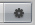

Other Settings
There are a number of options under the button  in the Terrain Inspector .
Base Terrain
| Pixel Error | Amount of allowable errors in the display of Terrain Geometry. This is essentially an LOD setting. |
| Base Map Dist. | The distance that Terrain Textures will be displayed in high-resolution. |
| Use Lightmap | If enabled, the created Lightmap will be used. Otherwise normal Scene Lighting will be used. |
Tree & Detail Settings
| Draw | If enabled, all trees, grass, and detail meshes will be drawn. |
| Detail Distance | Distance from the camera that details will stop being displayed. |
| Tree Distance | Distance from the camera that trees will stop being displayed. The higher this is, the further-distance trees can be seen. |
| Billboard Start | Distance from the camera that trees will start appearing as Billboards instead of Meshes. |
| Fade Length | Total distance delta that trees will use to transition from Billboard orientation to Mesh orientation. |
Wind Settings
| Speed | The speed that wind blows through grass. |
| Size | The areas of grass that are affected by wind all at once. |
| Bending | Amount that grass will bend due to wind. |